07 · The sheet, the side tab, editing, review, lock
Brief
Brief Maker puts the brief on an A4 sheet with a side tab beside it. Code: app/templates/brief-maker/index.html (sheet CSS from line ~300, the part view at renderSelPart ~4789, editing at startEdit ~3653, layout at GRID_COLS = 12, MIN_W = 3 ~4373). Design: /tmp/claude-1000/napkin-local/sidetab/final.md (Angle A, "selection first") and design/where-it-came-from.md for provenance.
The prompt and its source card
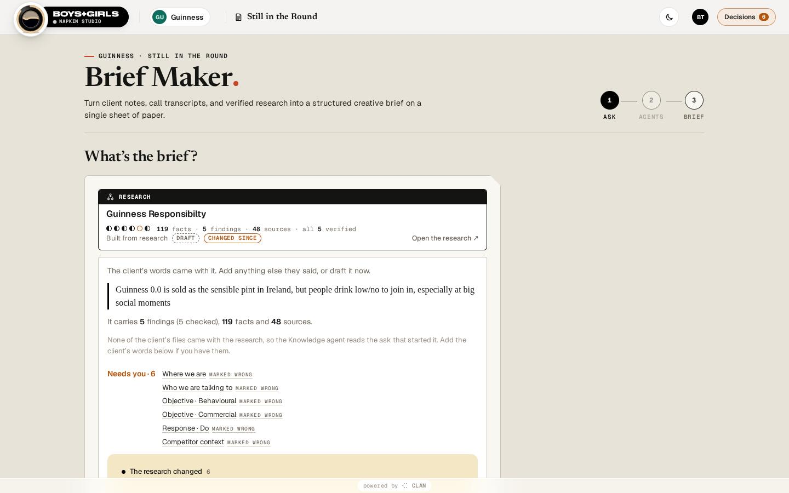
123- 1Source card: the research this brief was made from (manila "RESEARCH" tab, title, confidence dots, counts, "Open the research ↗")
- 2What the research says: the lines the brief will take in, plus "Needs you" items carried across
- 3Steps: Ask · Agents · Brief
A source card is the same object wherever one tool hands work to another (app/templates/shared/source-card.html). See Patterns.
The sheet
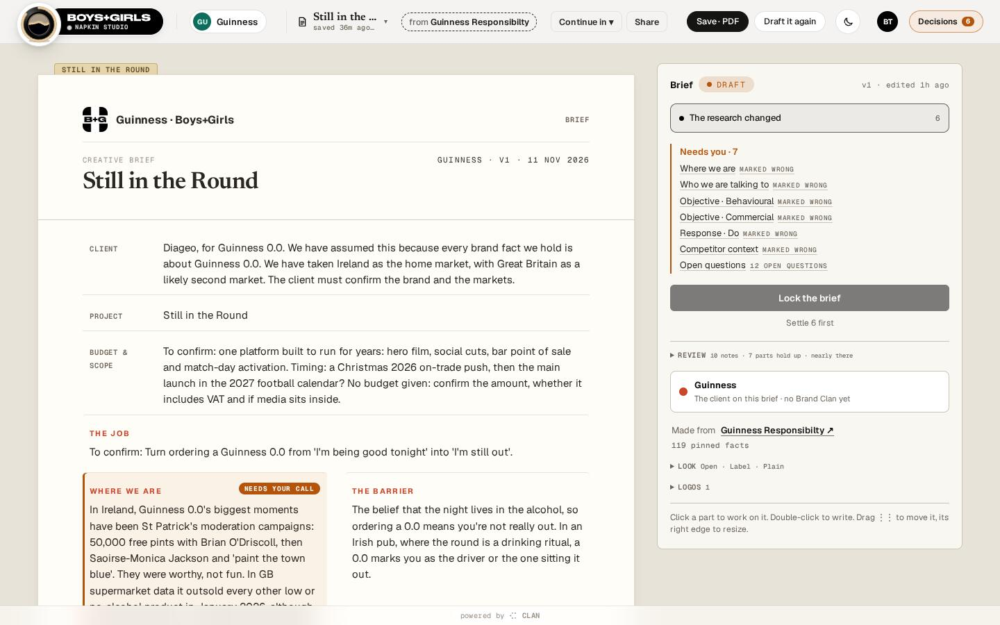
123456789101112- 1Manila tab: the project name (mono 10.5px caps on #E7D5AC, edge #C4AA75)
- 2Logos: client and agency tiles
- 3Meta: client code, version, date
- 4Ruled header rows (k-cell): label in a 60–92px margin, value across, a 1px ink hairline between rows. No card, radius or fill
- 5A prose part (k-prose). "Needs your call" is the only coloured tag on paper
- 6Side tab, brief view
- 7Status pill (DRAFT / READY TO LOCK / LOCKED) and version
- 8Lock the brief: the one primary, "Settle n first" under it
- 9Review (folded), client card, Made from
- 10Look (folded): Frame, Headings, Cover, Why notes, Colour
- 11Logos (folded)
- 12"Click a part to work on it…", shown until the first selection
Rows stay rows
The sheet is a 12-column grid. Each part keeps layout.parts.<key> {col,row,w,h,order}. A person sets only order and w, and col/row are recomputed by flowing the parts in order. A part too wide for the rest of a row starts the next one. The minimum width is 3 columns. In Boxed, a row's free space belongs to the row: the frame closes around it, with a dashed line where the last part ends (owner, 11 Nov). A moved or resized cell keeps its ruled style.
Frames: Open and Boxed
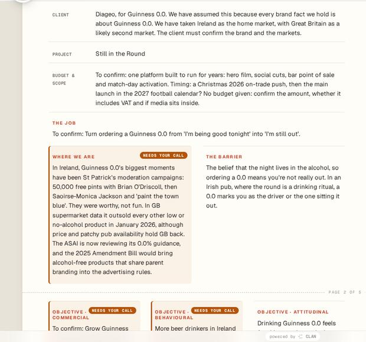
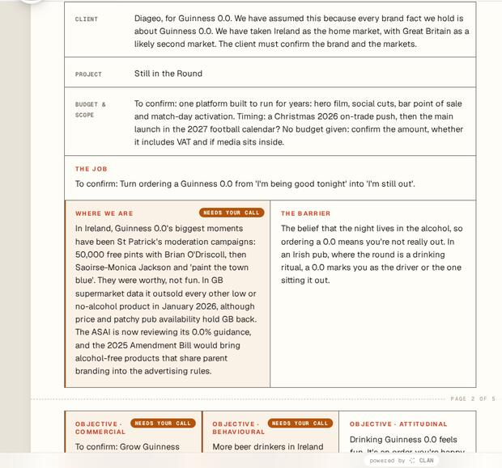
--frame-line (70% text into the paper), with no gaps and no doubled lines.frame-boxed to #sheet in the page, because the guide does not write to documents. In the product, the Look → Frame toggle saves layout.frame.Show as and Tone
Show as (layout.parts.<key>.as) | Look |
|---|---|
| Prose | Geist 15px paragraphs |
| Bullets | the part's sentences as a list |
| Callout | Newsreader italic 21px/1.32 with a 3.5px --brief-accent rule |
| Statement | Newsreader 600 28px/1.16, underlined in --brief-accent |
| Field | a ruled header row (k-cell) |
| Tone | Look |
|---|---|
| Plain | on the paper |
| Tint | color-mix(--brief-accent 9%, paper), padding 16px |
| Inverse | ink ground, paper words |
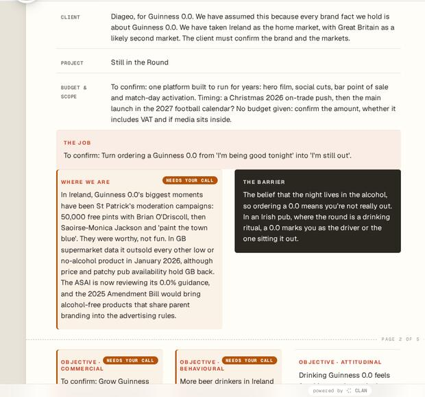
The side tab, every state
The tab shows either the brief or the selected part. Fixed-height controls sit above variable-height content. The tab never quotes the sheet. Save · PDF and Draft it again live in the top bar, not the tab (a departure from the mock that the design asks the owner to confirm).
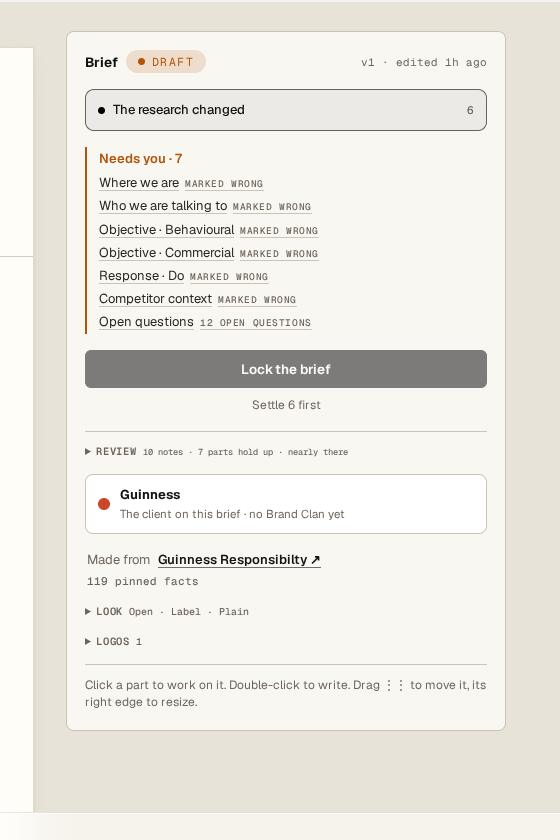
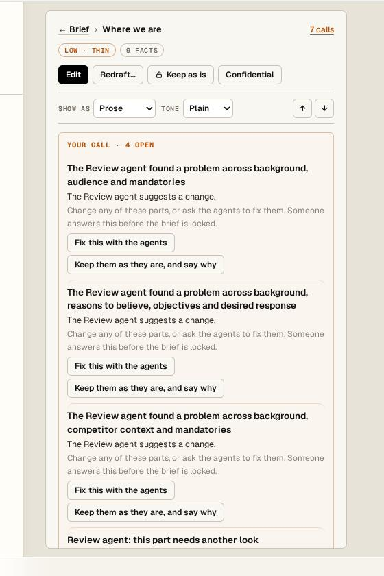
12345- 1Crumb: ← Brief › Where we are · "7 calls"
- 2State chips: LOW · THIN · 9 FACTS
- 3Actions: Edit (primary), Redraft…, Keep as is, Confidential
- 4Place on page: Show as, Tone, ↑ ↓ (a fixed row)
- 5Your call · n open
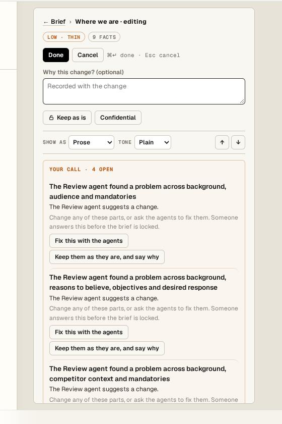
123- 1"· editing" in the crumb
- 2Done replaces Edit in the same spot, with Cancel. ⌘↵ done · Esc cancel
- 3Why this change? (optional, or needed when reopened)
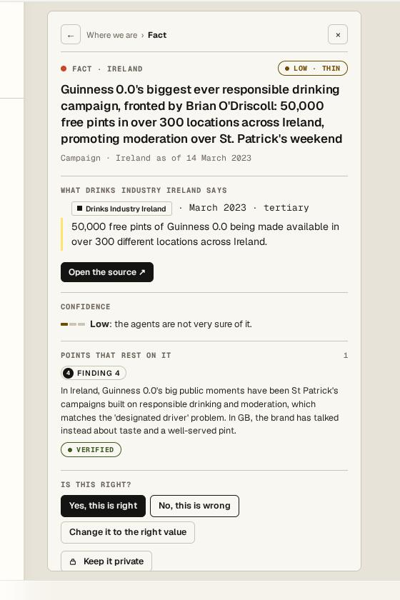
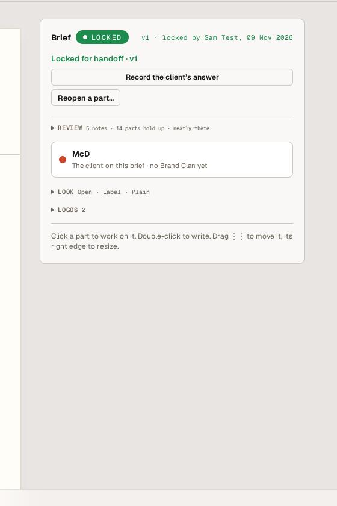
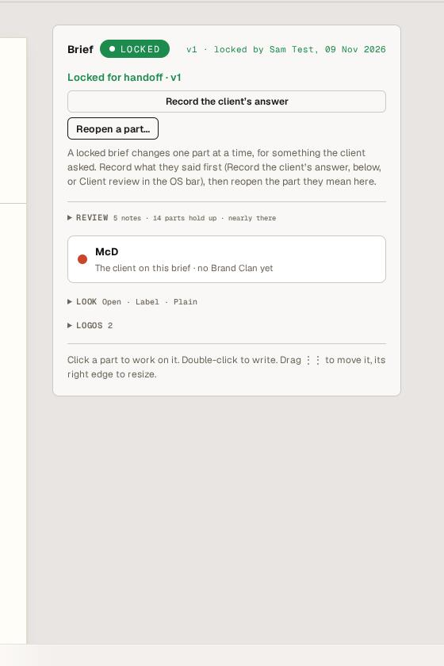
In-place editing
The part becomes editable where it stands, in its own type: prose is contenteditable, a list is one item per line, and a name is one line. A thin accent outline and a faint tint show on screen only and are never printed. There is no textarea, no Save on the paper, and paste is made plain. An unsent edit is kept in localStorage (wrapped in try/catch) for the viewer's convenience.
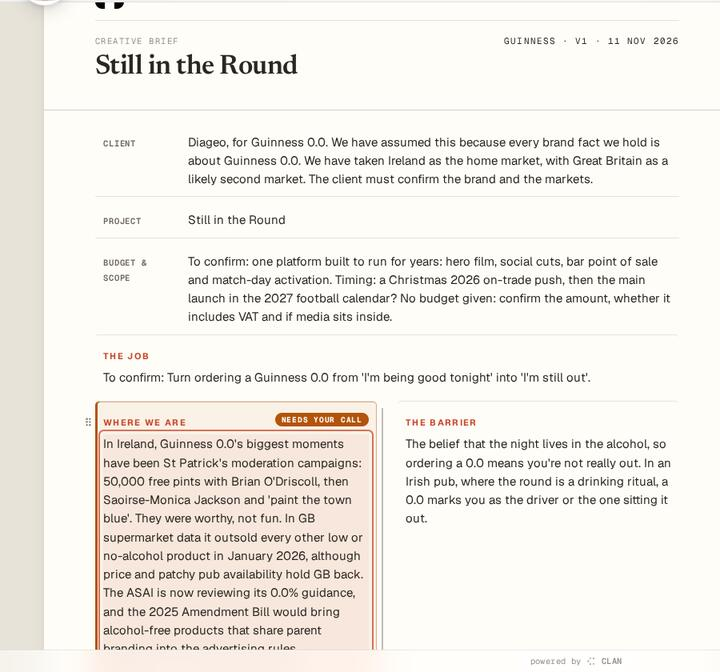
1- 1The part under edit, in place
Moving and resizing
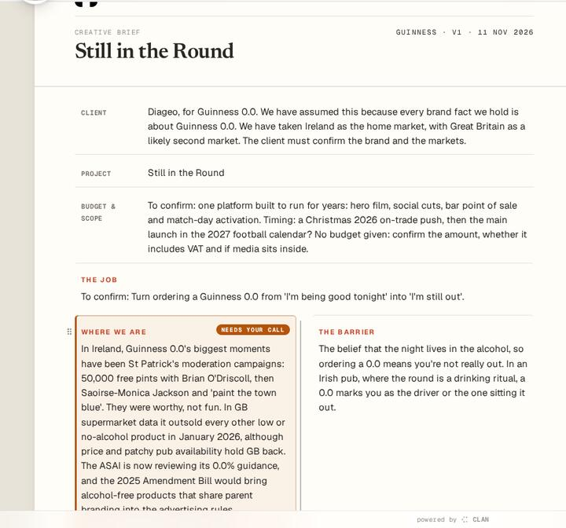
One command serves the grip, the edge, the ↑/↓ buttons and Alt+↑/↓. After a move the sheet scrolls only as far as needed (block:'nearest'), and the part stays selected and flashes once. saveLayout patches only the control pressed and never rebuilds the panel.
Provenance in the panel
Built from lists compact rows: your words (rows matching the sheet are hidden), library, facts and points, top 5 then "All n ›". "Also in" chips select the other parts. "Why it says this" is folded. History · n opens inside the panel (decisions on the record, written by, date). The ids sit in Full record only. This is one renderer, partView(ref) in clan-fields.html, shared with Research.
Client review
On a locked brief the bar offers Client review. The tab asks "What did the client say about the brief?" (Accepted · Accepted with changes · Rejected), who answered, their email, which parts changed, and an attachment ("Paste their email, or a note of what they said"). Save records it. "Record the client's answer" in the brief view opens the same form in place.
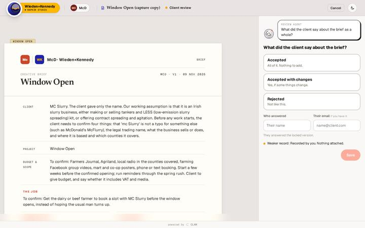
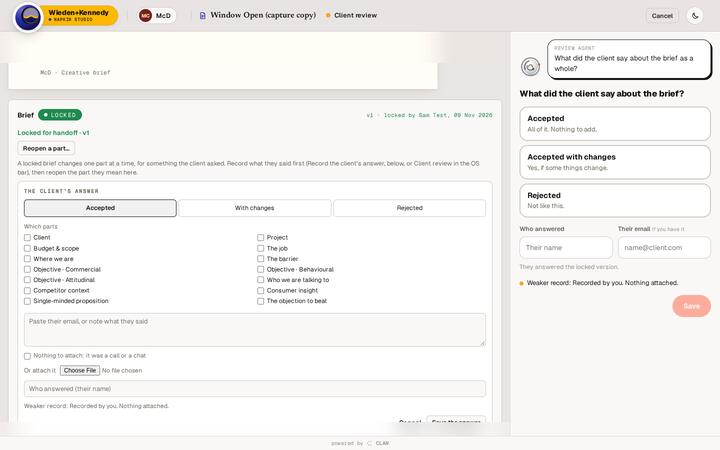
Lock and Unlock
Lock is the brief view's primary, disabled with "Settle n first" until every call is settled. When the last call settles while a part is selected, one line appears under the crumb: "Brief is ready to lock · ← Brief". Locked, the part view's Edit and Redraft become one primary, "Reopen this part…". The bar keeps Unlock next to Client review.
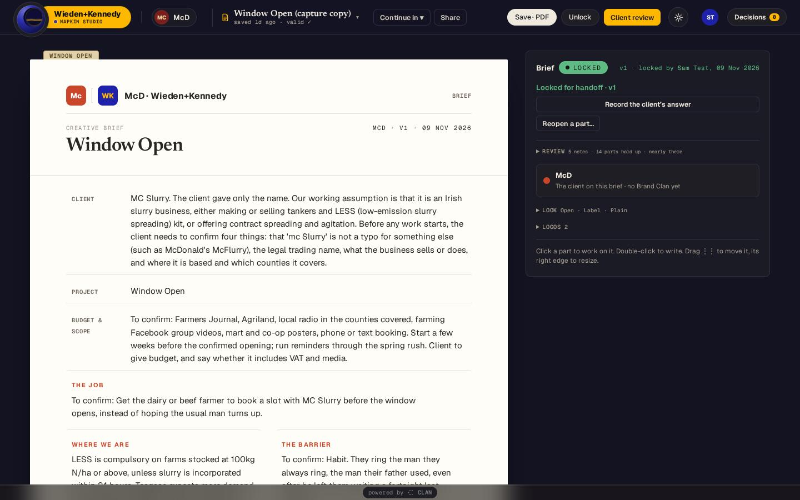
Logos
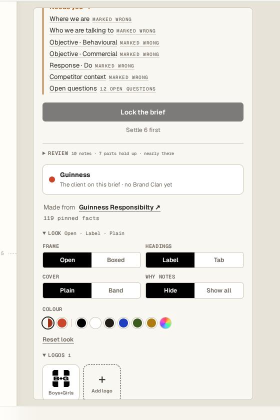
A logo comes from an upload or from the client's Brand Clan kit (visual.logos). When no logo is set, the agency tile uses its icon (iconOf) or its initials. Logos replace NAPKIN in the grid export, and Save · PDF prints them.
Phone
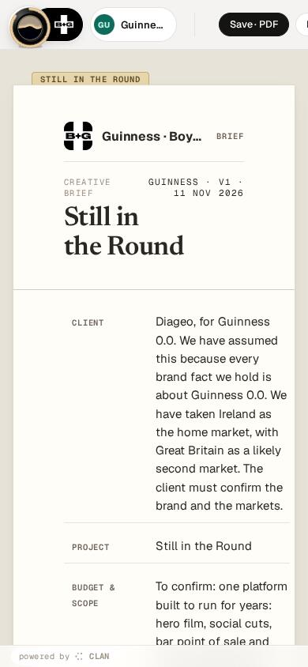